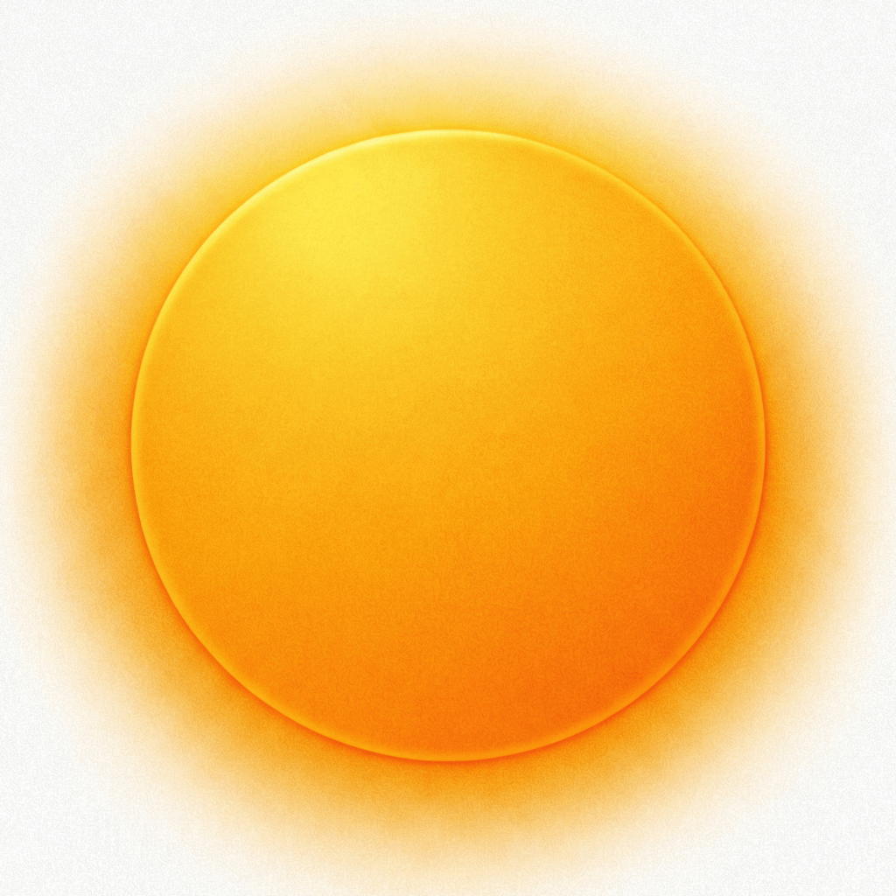

Configura tu cuenta y tus contactos
La app pide un nombre visible, acceso a Contactos para elegir a una persona y una cuenta de iCloud para compartir el estado. La invitación se crea como enlace de CloudKit.
Un check-in diario para compartir tu estado con las personas que tú eliges, desde la app, el widget o un atajo.
ID de App Store: 6757763851 · iOS 17 o posterior · español e inglés
Precio de descarga indicado por iTunes: 0,99 € · pendiente de confirmación

Si quieres saber si un padre o una madre mayor que vive solo ha hecho su check-in, avisar a tu familia durante un viaje o compartir un “estoy bien” al salir a hacer deporte solo, la app reúne un check-in manual, contactos elegidos, mensajes y avisos locales. También puedes usar un mensaje como “He llegado” al volver a casa. No es un servicio de emergencias y el código no garantiza la entrega.
El flujo que aparece en el código combina una confirmación manual, un registro compartido en CloudKit y notificaciones locales.
La app pide un nombre visible, acceso a Contactos para elegir a una persona y una cuenta de iCloud para compartir el estado. La invitación se crea como enlace de CloudKit.
Tocas el botón principal, el widget, el atajo de Siri/Shortcuts o el acceso rápido del sistema. Puedes añadir un mensaje, una foto o el estado de ubicación “Estoy aquí”.
El estado se guarda como DailyStatus en CloudKit. El contacto que aceptó la invitación puede sincronizarlo, abrirlo, marcarlo como visto y conversar en el chat.
Esta lista se limita a pantallas, servicios y capacidades encontradas en el proyecto iOS.
Mensajes editables como “Estoy bien”, “Buenos días”, “Buenas noches”, “Te quiero”, “Estoy aquí” y “He llegado”, con emoji y tema de color.
Widget pequeño o mediano con estados pendiente, enviado y visto; abre la app mediante imok://checkin. En iOS 18 hay también un control del sistema que abre ese flujo.
Recordatorios personales configurables. El código crea por defecto uno a las 10:00 y permite editar, activar, desactivar o borrar recordatorios.
Aviso diario de deadline, aviso cuando llega un check-in, aviso cuando alguien ve tu estado y un monitor local de ausencia para estados compartidos.
Historial local de envíos y recibidos, vista de lista o calendario, fotos asociadas y límite de 100 elementos.
Contactos conectados, invitaciones pendientes, revocación de participantes, enlaces de invitación y chat sincronizado mediante registros Message de CloudKit.
Captura con la cámara frontal, compresión, envío como CKAsset, miniatura para contactos e historial y opción de mostrar la foto en el widget.
El mensaje “Estoy aquí” solicita ubicación When In Use una vez, obtiene una localidad y genera una URL de Apple Maps. No hay un flujo de ubicación continua en el código.
Live Activity con estado enviado/sincronizado/visto, contador de personas que lo han visto, tema visual, vibración, sonido, voz, alto contraste, diferenciar sin color y reducción de movimiento.
La ruta depende del modo usado y de lo que esté habilitado en cada dispositivo.
No hay en el repositorio un backend propio, un SDK de WhatsApp ni un código que envíe por SMS una alerta automática al familiar cuando vence el plazo. El “Safety Auto-Warning” implementado es una notificación local programada en el dispositivo que ya tiene el estado compartido.
Por eso la web no presenta el flujo como una garantía ni como sustituto de un servicio de emergencias.
El código no incluye SDKs de analítica, anuncios o compras integradas; sí usa servicios de Apple y los permisos que se enumeran aquí.
| Elemento | Dónde acaba | Cuándo |
|---|---|---|
| DailyStatus: fecha, estado, mensaje, nombre, vistos, plazo, enlaces de vuelta y foto opcional | CloudKit: base privada del propietario y base compartida de los contactos aceptados | Al confirmar, compartir, sincronizar o marcar como visto |
| Message: texto, senderID, senderName y timestamp | CloudKit, en la zona del estado y con referencia al registro padre | Al enviar o sincronizar el chat |
| Nombre, identificador y fecha de una invitación pendiente | UserDefaults estándar del dispositivo | Al elegir un contacto y crear la invitación |
| Foto comprimida y miniaturas | Temporal, Caches, Documents y App Group; la foto compartida se adjunta a CloudKit como CKAsset | Al tomar/enviar una foto, guardar historial o actualizar widget |
| Una ubicación y su localidad para “Estoy aquí” | Se incorpora al mensaje y puede terminar en CloudKit o en el contenido manual de SMS/WhatsApp | Solo al seleccionar y enviar ese mensaje |
Permiso de Contactos para elegir personas con teléfono o email. El proyecto guarda localmente la invitación pendiente; no contiene una subida del libro completo de contactos.
Permiso de cámara para hacer una foto con el flujo de check-in fotográfico.
Permiso When In Use, únicamente para resolver el mensaje “Estoy aquí”.
Alertas, sonido y badge locales; registro de remote notifications y suscripciones CloudKit para actualizaciones silenciosas.
Cuenta de iCloud necesaria para el flujo principal de compartir y sincronizar estados. Sin ella la app muestra una pantalla de iCloud no disponible.
UserDefaults, App Group, Documents, Caches y temporal para preferencias, estado cacheado, historial, mensajes, fotos y datos del widget.
La app no controla la red, el estado del dispositivo ni los permisos del sistema.
No hay código que envíe por su cuenta una alerta SMS/WhatsApp si el teléfono de quien confirma está apagado. Si el dispositivo del contacto ya sincronizó el estado, su temporizador local puede llegar a dispararse; depende de ese dispositivo, de iOS y de sus permisos.
CloudKit necesita conectividad para guardar y sincronizar el último cambio. El código muestra una actualización optimista local, pero no implementa una cola persistente de reintento del envío.
Si iOS no autoriza alertas, sonido o badge, los avisos locales no se muestran. El contenido puede seguir apareciendo al abrir y sincronizar la app.
Se conservan los dos recursos existentes de `ImOK/`.

Respuestas directas según el repositorio y la ficha de App Store consultados.
Se conserva el changelog de la página actual y se añade la versión 1.0 que aparece en App Store.